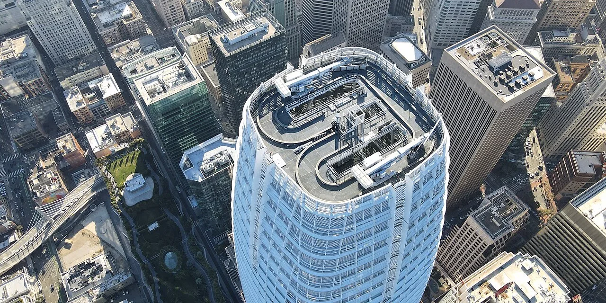

세일즈포스 주주가 지금 가장 궁금해할 질문은 “Agentforce가 정말 매출로 바뀌고 있는가”입니다. 생성형 AI가 기업용 소프트웨어의 거의 모든 발표 자료에 들어간 지 오래됐기 때문에, 단순히 AI 에이전트를 만들었다는 말만으로는 충분하지 않습니다. 고객사가 실제로 추가 계약을 맺고, 기존 CRM 데이터 안에서 더 많은 업무를 맡기고, 그 결과가 구독 매출과 잔여계약부채로 남아야 합니다.
세일즈포스가 SEC에 제출한 FY2027 1분기 실적 자료를 보면 2026년 4월 30일로 끝난 분기 매출은 111억 3,300만 달러였습니다. 전년 대비 13% 늘었고, 환율 영향을 제외하면 12% 늘었습니다. 구독·지원 매출은 105억 9,300만 달러로 전년 대비 14% 늘었습니다. 이 숫자에는 인포매티카 기여분이 포함되어 있어, 투자자는 표면 성장률과 유기적 성장률을 나누어 봐야 합니다.
눈에 띄는 숫자는 Agentforce입니다. 회사는 Agentforce ARR이 12억 달러, Agentforce와 Data 360을 합친 ARR이 약 34억 달러라고 밝혔습니다. 또 Agentforce와 Slack에서 처리된 에이전트 작업 단위가 38억 건으로 전분기 대비 111% 늘었다고 설명했습니다. 다만 이 숫자는 좋은 출발점이지 결론은 아닙니다. 투자 판단에서는 “얼마나 많이 시연됐는가”보다 “얼마나 오래 계약으로 남았는가”가 더 중요합니다.
Agentforce는 발표보다 사용량이 먼저 검증됩니다

Agentforce의 강점은 세일즈포스가 이미 고객 데이터가 쌓이는 위치에 있다는 점입니다. 영업 기록, 고객 상담, 마케팅 반응, 서비스 이력, 커머스 행동이 같은 플랫폼 안에 모이면 AI 에이전트가 단순 답변을 넘어 업무 흐름을 건드릴 수 있습니다. 고객지원에서 문의를 분류하고, 영업 기회를 정리하고, 다음 행동을 제안하는 일은 새 앱보다 기존 업무 화면 안에 붙을 때 채택 장벽이 낮아집니다.
하지만 기업용 AI는 소비자용 챗봇처럼 빠르게 퍼지지 않습니다. 보안팀 승인, 데이터 권한, 감사 기록, 책임 소재, 기존 업무 프로세스 변경이 모두 따라붙습니다. 세일즈포스가 말하는 에이전트 작업 단위가 늘어도, 고객사가 이를 핵심 업무 자동화로 확대하지 않으면 매출 기여는 제한될 수 있습니다. 그래서 Agentforce는 기능 발표보다 유료 좌석, 프리미엄 SKU, 데이터 클라우드 사용량, 기존 고객 안의 확장 계약으로 검증해야 합니다.
이번 분기에서 긍정적으로 볼 부분은 기존 고객 기반입니다. 세일즈포스는 1분기 Agentforce와 Data 360 예약의 절반 이상이 기존 고객에서 나왔다고 설명했습니다. 새 고객을 매번 설득하는 것보다 기존 고객의 업무 범위를 넓히는 쪽이 영업 효율이 좋습니다. 다만 기존 고객 확장이 강하다는 말은 반대로 신규 고객 확보가 둔화될 때 성장률이 빨리 식을 수 있다는 뜻이기도 합니다.
잔여계약부채가 다음 매출의 무게를 보여줍니다
관련 영상
[Session] 세일즈포스 에이전트포스 챔피언이 되는 법 Part.1
기업용 소프트웨어에서 가장 먼저 봐야 할 숫자는 다음 분기 매출보다 잔여계약부채입니다. 세일즈포스의 현재 잔여계약부채, 즉 cRPO는 336억 달러였습니다. 전년 대비 14% 늘었고, 환율 영향을 제외하면 13% 늘었습니다. 전체 RPO는 679억 달러였습니다. 같은 분기 10-Q는 RPO가 아직 인식되지 않은 계약 매출이며, 갱신 시점, 계약 기간, 환율, 인수합병에 영향을 받는다고 설명합니다.
이 설명이 중요한 이유는 cRPO가 다음 12개월 매출의 질을 비추는 숫자이기 때문입니다. AI 기능이 고객 발표회에서는 크게 보일 수 있지만, 계약서에 남지 않으면 매출로 이어지지 않습니다. 세일즈포스가 Agentforce를 Customer 360 전반에 붙이고 Data 360과 함께 팔고 있다면, 그 효과는 시간이 지나 cRPO와 구독·지원 매출 성장률에 나타나야 합니다. cRPO 성장률이 매출 성장률보다 빠르게 유지되면 다음 매출 가시성이 좋아집니다.
다만 이번 분기에는 인포매티카 영향도 함께 봐야 합니다. 세일즈포스는 총매출 111억 3,300만 달러 중 4억 4,400만 달러, 구독·지원 매출 105억 9,300만 달러 중 4억 2,800만 달러가 인포매티카 기여분이라고 밝혔습니다. 인수 효과가 매출 성장률을 끌어올렸다면, 시장은 몇 분기 뒤 유기적 성장률이 얼마나 남는지 다시 물을 수 있습니다. AI 스토리가 좋아 보여도, 유기적 구독 성장과 인수 기여분을 분리하지 않으면 성장의 질을 놓치기 쉽습니다.
마진 개선은 주주환원보다 오래 봐야 합니다
세일즈포스의 FY2027 1분기 GAAP 영업이익률은 21.1%, 비GAAP 영업이익률은 34.8%였습니다. 과거의 고성장 SaaS 기업 이미지만 놓고 보면 이제는 성장률보다 수익성이 더 중요한 단계에 들어왔습니다. 세일즈포스가 높은 평가를 받으려면 AI가 새 매출을 만들 뿐 아니라 영업과 지원 비용을 낮추거나 고객당 매출을 끌어올리는 방식으로 마진을 방어해야 합니다.
이번 분기 순이익은 21억 700만 달러였고, 영업현금흐름은 67억 달러, 잉여현금흐름은 66억 달러였습니다. 현금 창출력은 분명 강합니다. 회사는 주주에게 275억 달러를 환원했고, 여기에는 271억 달러의 자사주 매입과 3억 6,500만 달러의 배당이 포함됩니다. 또 250억 달러 규모의 가속 자사주 매입을 진행했고, 이에 따라 초기로 1억 300만 주를 인도받았습니다.
문제는 자사주 매입이 사업의 본질을 대신할 수 없다는 점입니다. 주식 수가 줄면 주당순이익은 좋아질 수 있지만, 고객 수요가 둔화되거나 AI 제품의 가격 결정력이 약하면 장기 가치는 제한됩니다. 특히 10-Q 기준 현금 및 현금성 자산은 89억 3,500만 달러, 시장성 증권은 29억 200만 달러였고, 비유동 부채는 392억 8,000만 달러였습니다. 자사주 매입과 부채 증가가 동시에 보이면, 투자자는 현금흐름의 지속성과 이자 비용 부담을 함께 봐야 합니다.
다음 분기에는 어떤 숫자를 먼저 볼까
다음 실적에서 첫 번째 확인 지표는 cRPO 성장률입니다. 세일즈포스는 FY2027 2분기 매출을 112억 7,000만 달러에서 113억 5,000만 달러로 제시했습니다. 전년 대비 10~11% 성장이고, 인포매티카 기여분이 4%포인트를 약간 넘는 수준이라고 설명했습니다. 따라서 headline 매출보다 인수 효과를 제외한 구독 성장률과 cRPO 증가율을 함께 봐야 합니다.
두 번째는 Agentforce와 Data 360의 ARR입니다. 이번 분기 합산 ARR은 약 34억 달러였고, 그 안에는 인포매티카 클라우드 ARR 11억 달러와 Agentforce ARR 12억 달러가 포함됐습니다. 앞으로 이 숫자가 커지더라도 고객사가 실제로 더 많은 데이터를 연결하고 더 많은 업무를 자동화하는지 확인해야 합니다. 에이전트 작업 단위가 늘어나는 것과 청구 가능한 매출이 늘어나는 것은 비슷해 보이지만 같은 숫자는 아닙니다.
세 번째는 영업이익률과 잉여현금흐름입니다. 회사는 FY2027 연간 매출을 459억 달러에서 462억 달러로 제시했고, 비GAAP 영업이익률은 34.3%로 전망했습니다. 영업현금흐름과 잉여현금흐름은 4~5% 성장으로 제시했습니다. AI 투자가 늘고 데이터 인프라가 커지는 국면에서 마진이 유지된다면 세일즈포스의 투자 논리는 강해집니다. 반대로 AI 매출은 커지는데 현금흐름이 둔화되면 시장은 에이전트 사업의 경제성을 다시 따질 가능성이 큽니다.
결국 세일즈포스는 AI 에이전트라는 이름보다 고객 데이터, 계약 잔고, 구독 매출, 현금흐름이 함께 움직이는지를 봐야 하는 회사입니다. Agentforce가 진짜 플랫폼 확장이면 cRPO와 Data 360 사용량, 프리미엄 SKU 예약, 비GAAP 영업이익률이 같은 방향으로 좋아질 것입니다. 반대로 발표는 화려한데 유기적 성장과 현금흐름이 약해지면, 주주는 AI 기대보다 SaaS 성숙기의 냉정한 숫자를 먼저 보게 됩니다.